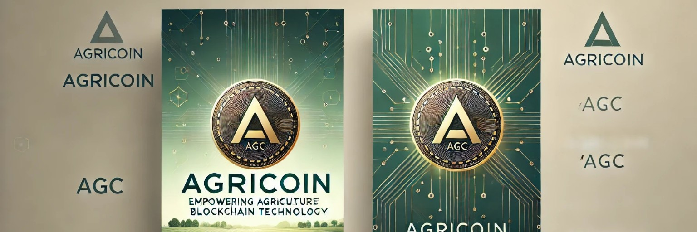

Our NFT Collection



Empowering Agriculture through Blockchain Technology and NFT Innovation
Explore NFTsAgricoin leverages blockchain technology to create a sustainable ecosystem for farmers, ensuring transparency and efficiency.
Follow us on Twitter for the latest updates:
Twitter: @Agricoinofficia